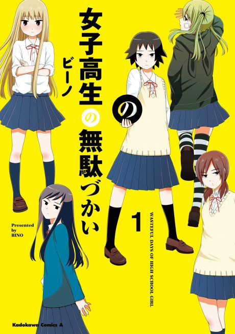

Wasteful Days of High School Girls
女子高生の無駄づかい
After the anime, read the manga from Chapter 40.
7.4AniList score
—Animeter, no votes yet
12episodes
Anime finished. Where does the manga pick up?
Start at Chapter40
The anime ends around chapter 39 (Volume 6), so start at chapter 40. A short omake at the end of chapter 39 was not adapted, and many gags were skipped.
139ongoing
Season 1Start reading here